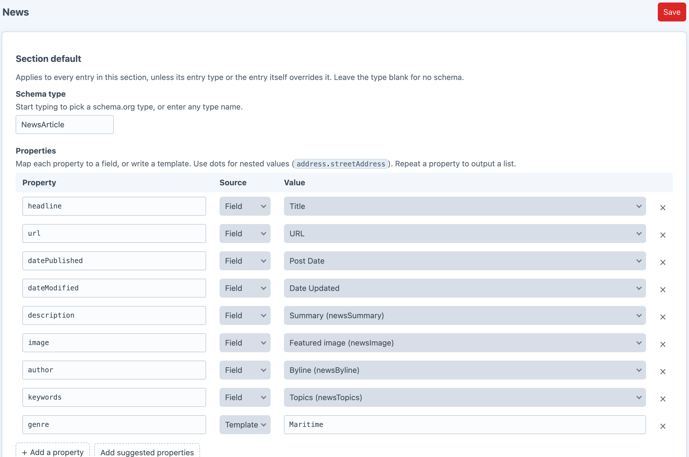
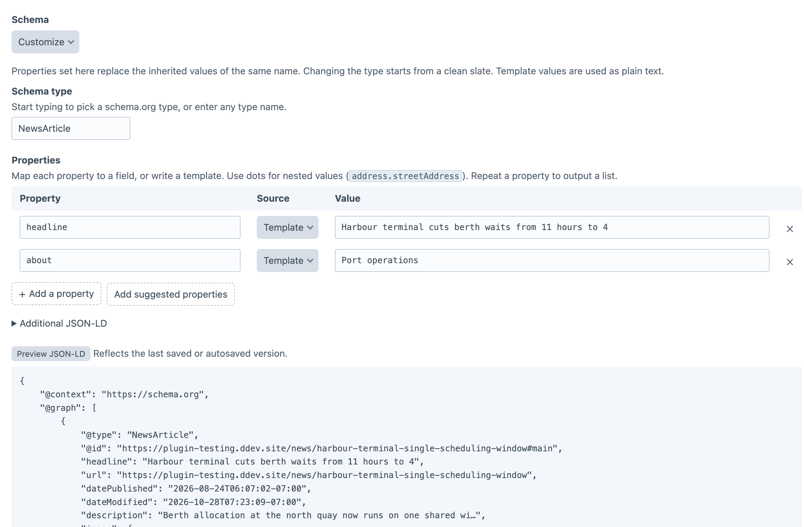

Schema.org JSON-LD for sections,
entry types and entries.
Most sites that want schema.org markup install a whole SEO suite to get it. Schemy is only the JSON-LD.
| Adds | SEO suite | Schemy |
|---|---|---|
| Meta titles & descriptions | ✓ | — |
| Sitemaps & robots.txt | ✓ | — |
| Social cards | ✓ | — |
| Database tablesand a settings tree to match | ✓ | — |
| Schema.org JSON-LDper section, entry type and entry | ✓ | ✓ |
Map a property to a field you already have. Schemy shapes each value for the property it fills.
A section sets the default, an entry type can replace it, and any entry can customize its own.
ArticleProductheadlineStart typing a schema.org type, then map each property to a field or a short template.

A Schemy field lets an author inherit, customize or disable the schema for one entry.
